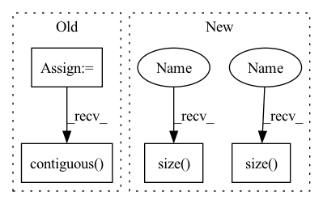

Pattern ID :1308

Before Change
def forward(self, x):
stride = self.stride
assert (x.data.dim() == 4)
B = x.data.size(0)
C = x.data.size(1)
H = x.data.size(2)
W = x.data.size(3)
ws = stride
hs = stride
x = x.view(B, C, H, 1, W, 1).expand(B, C, H, stride, W, stride).contiguous().view(B, C, H * stride, W * stride)
return x
After Change
def forward(self, x):
assert (x.data.dim() == 4)
x = x.view(x.size(0), x.size(1), x.size(2), 1, x.size(3), 1).\
expand(x.size(0), x.size(1), x.size(2), self.stride, x.size(3), self.stride).contiguous().\
view(x.size(0), x.size(1), x.size(2) * self.stride, x.size(3) * self.stride)
In pattern: SUPERPATTERN
Frequency: 4
Non-data size: 4
Instances
Fragment ID: 3856442
Project Name: tianxiaomo/pytorch-yolov4
Commit Name: 1ff5a1085ce0c1b35c2ea45b707166ac404e0b66
Time: 2020-08-11
Author: ersheng@nvidia.com
File Name: tool/darknet2pytorch.py
M Class Name: Upsample_expand
N Class Name: Upsample_expand
M Method Name: forward(2)
N Method Name: forward(2)
M Parent Class: nn.Module
N Parent Class: nn.Module
M File Name: tool/darknet2pytorch.py
N File Name: tool/darknet2pytorch.py
M Start Line: 58
M End Line: 66
N Start Line: 60
N End Line: 62
'>
Before Change
if inference:
B = x.data.size(0)
C = x.data.size(1)
H = x.data.size(2)
W = x.data.size(3)
return x.view(B, C, H, 1, W, 1).expand(B, C, H, tH // H, W, tW // W).contiguous().view(B, C, tH, tW)
else:
return F.interpolate(x, size=(tH, tW), mode="nearest")
After Change
//H = x.data.size(2)
//W = x.data.size(3)
return x.view(x.size(0), x.size(1), x.size(2), 1, x.size(3), 1).\
expand(x.size(0), x.size(1), x.size(2), target_size[2] // x.size(2), x.size(3), target_size[3] // x.size(3)).\
contiguous().view(x.size(0), x.size(1), target_size[2], target_size[3])
else:
return F.interpolate(x, size=(target_size[2], target_size[3]), mode="nearest")
'>
Fragment ID: 3854395
Project Name: tianxiaomo/pytorch-yolov4
Commit Name: 1ff5a1085ce0c1b35c2ea45b707166ac404e0b66
Time: 2020-08-11
Author: ersheng@nvidia.com
File Name: models.py
M Class Name: Upsample
N Class Name: Upsample
M Method Name: forward(4)
N Method Name: forward(4)
M Parent Class: nn.Module
N Parent Class: nn.Module
M File Name: models.py
N File Name: models.py
M Start Line: 23
M End Line: 36
N Start Line: 25
N End Line: 39
'>
Before Change
def forward(self, x, rois, roi_indices):
roi_indices = torch.Tensor(roi_indices).float()
rois = torch.Tensor(rois).float()
if x.is_cuda:
roi_indices = roi_indices.cuda()
rois = rois.cuda()
indices_and_rois = torch.cat([roi_indices[:, None], rois], dim=1)
xy_indices_and_rois = indices_and_rois[:, [0, 1, 2, 3, 4]]
indices_and_rois = xy_indices_and_rois.contiguous()
// 利用建议框对公用特征层进行截取
pool = self.roi(x, indices_and_rois)
pool = pool.view(pool.size(0), -1)
After Change
rois = rois.cuda()
rois_feature_map = torch.zeros_like(rois)
rois_feature_map[:, [0,2]] = rois[:, [0,2]] / img_size[1] * x.size()[3]
rois_feature_map[:, [1,3]] = rois[:, [1,3]] / img_size[0] * x.size()[2]
indices_and_rois = torch.cat([roi_indices[:, None], rois_feature_map], dim=1)
//-----------------------------------//
'>
Fragment ID: 3855416
Project Name: bubbliiiing/faster-rcnn-pytorch
Commit Name: d456f02a402fd8cf8db1d991aa612439b3c0ffb2
Time: 2021-01-30
Author: 47347516+bubbliiiing@users.noreply.github.com
File Name: nets/classifier.py
M Class Name: VGG16RoIHead
N Class Name: VGG16RoIHead
M Method Name: forward(5)
N Method Name: forward(4)
M Parent Class: nn.Module
N Parent Class: nn.Module
M File Name: nets/classifier.py
N File Name: nets/classifier.py
M Start Line: 31
M End Line: 39
N Start Line: 33
N End Line: 59
'>
Before Change
def forward(self, x, rois, roi_indices):
roi_indices = torch.Tensor(roi_indices).float()
rois = torch.Tensor(rois).float()
if x.is_cuda:
roi_indices = roi_indices.cuda()
rois = rois.cuda()
indices_and_rois = torch.cat([roi_indices[:, None], rois], dim=1)
xy_indices_and_rois = indices_and_rois[:, [0, 1, 2, 3, 4]]
indices_and_rois = xy_indices_and_rois.contiguous()
// 利用建议框对公用特征层进行截取
pool = self.roi(x, indices_and_rois)
fc7 = self.classifier(pool)
After Change
rois = rois.cuda()
rois_feature_map = torch.zeros_like(rois)
rois_feature_map[:, [0,2]] = rois[:, [0,2]] / img_size[1] * x.size()[3]
rois_feature_map[:, [1,3]] = rois[:, [1,3]] / img_size[0] * x.size()[2]
indices_and_rois = torch.cat([roi_indices[:, None], rois_feature_map], dim=1)
//-----------------------------------//
'>
Fragment ID: 3854953
Project Name: bubbliiiing/faster-rcnn-pytorch
Commit Name: d456f02a402fd8cf8db1d991aa612439b3c0ffb2
Time: 2021-01-30
Author: 47347516+bubbliiiing@users.noreply.github.com
File Name: nets/classifier.py
M Class Name: Resnet50RoIHead
N Class Name: Resnet50RoIHead
M Method Name: forward(5)
N Method Name: forward(4)
M Parent Class: nn.Module
N Parent Class: nn.Module
M File Name: nets/classifier.py
N File Name: nets/classifier.py
M Start Line: 68
M End Line: 77
N Start Line: 82
N End Line: 107